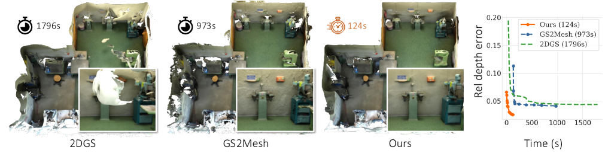
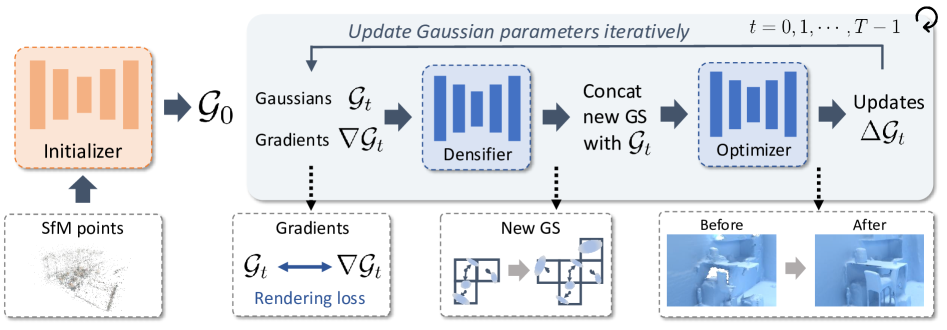
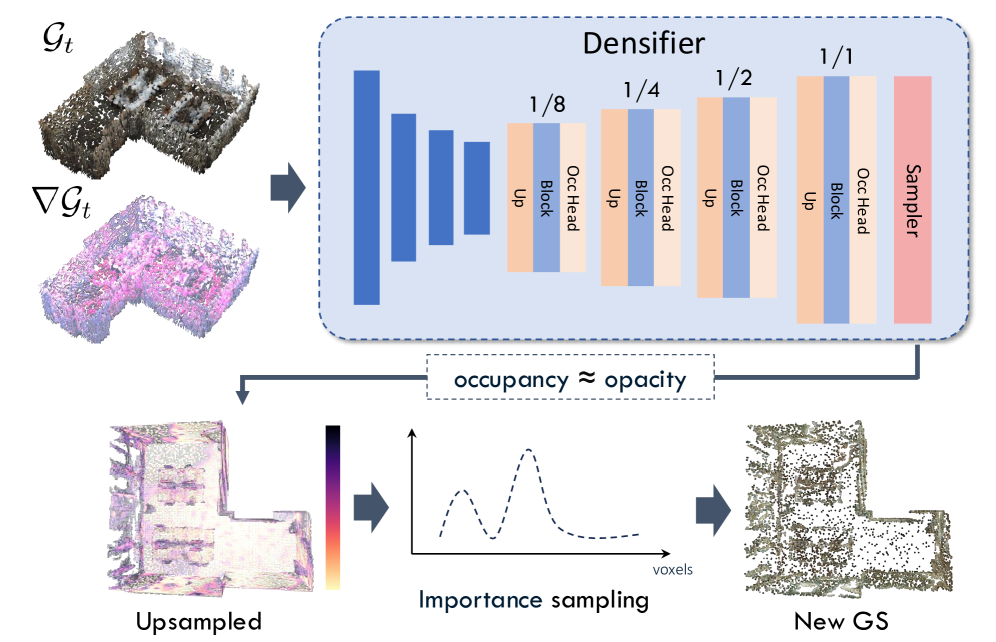
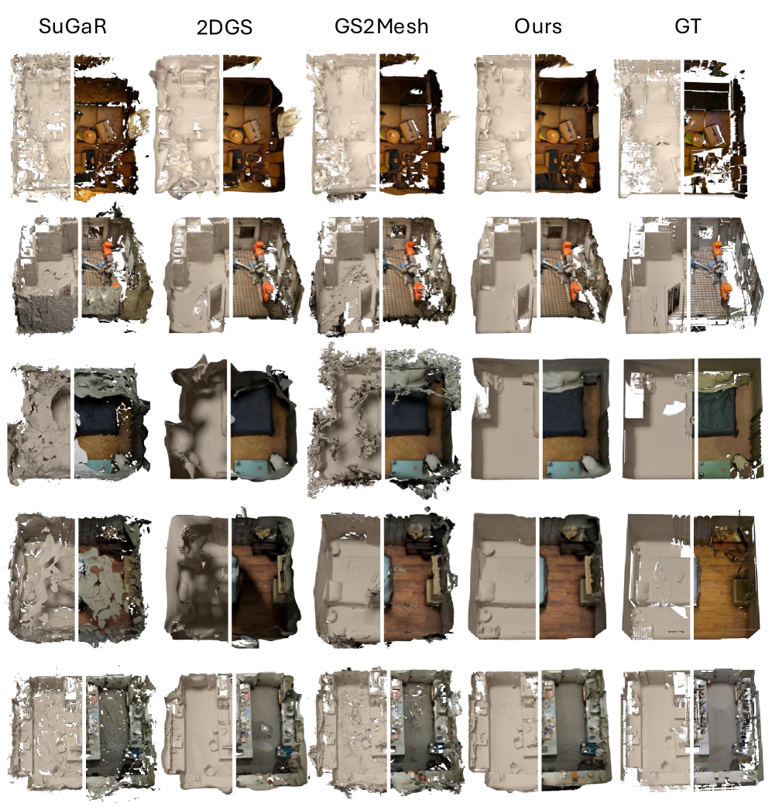
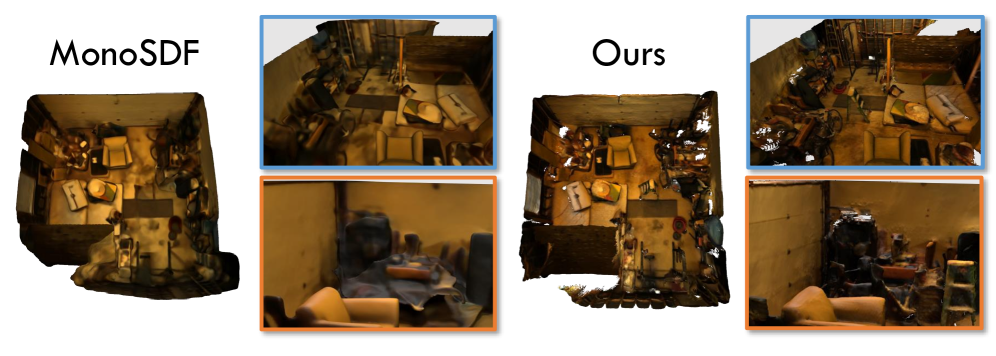
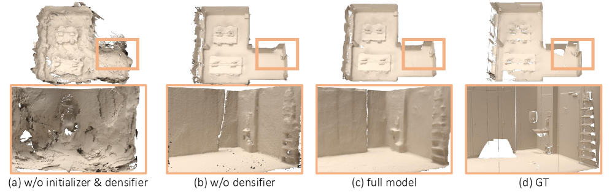

Academic deep read · computer vision / 3D reconstruction
QuickSplat：通过学习式高斯初始化加速三维表面重建
把依赖每个场景数万次梯度下降的 2D Gaussian Splatting，改造成由初始化先验、梯度感知 densifier 与学习式优化器共同驱动的五步重建流程。

一句话总结
- 问题：2DGS 类表面重建依赖逐场景优化，在大室内场景的纹理贫乏墙面和低视角覆盖区域容易出现弯曲表面、浮动伪影，而且通常需要数十分钟。
- 方法：从 SfM 点云出发，先用稀疏 3D CNN 学习一个密集 Gaussian 初始化，再把当前 Gaussian 的渲染梯度送入 densifier 和 optimizer，进行五个时间步的增点与更新。
- 效果：ScanNet++ 测试集上，QuickSplat（w/ opt）绝对深度误差 0.0578、Chamfer 0.1347、Acc@10cm 0.8887，运行时间 124 秒。
- 代码状态：训练器、模型、数据预处理和评测脚本已发布；README 的 Release Schedule 仍把 checkpoints 标为未发布，因此复现需要自行训练或获得权重。
1. 论文元信息与贡献边界
QuickSplat 的研究对象是从任意数量的已知位姿室内图像恢复高质量表面。作者不把任务定义为传统的“从一次前馈直接预测完整网格”，而是保留 2DGS 的可微渲染和 TSDF 融合，同时学习初始化、增密位置与参数更新，使一个训练好的网络可以把跨场景经验迁移到新场景。
论文的贡献集中在两个层面。第一，initializer prior 不再把 SfM 点云当作已经覆盖表面的充分输入，而是借助 ScanNet++ 的几何监督，在稀疏体素上预测更多 Gaussian 及其属性。第二，densification-optimization loop 把传统 3DGS 中依靠梯度阈值、分裂和复制的启发式密度控制，改为一个读取渲染梯度的 densifier，加上一个预测 latent 更新量的 optimizer。
作者在摘要中把初始化描述为 “a strong starting point for the reconstruction”，把 densifier 描述为 “removing the needs of heuristics”。两句话分别对应论文的两个证据方向：初始化改善全局几何与纹理缺失，densifier 让局部空洞可以在后续时间步重新被填充。
需要明确的是，QuickSplat 不是通用的任意物体 3D 重建器。训练和评估都围绕大规模室内环境、ScanNet++ 的激光扫描网格与已知相机位姿展开；它学习到的“墙面平整、房间尺度、物体分布”等先验，正是方法优势来源，也是跨域使用时的潜在偏置。
2. 背景与动机：为什么传统 2DGS 优化在大场景中变慢且不稳
NeRF 和 3DGS 把多视图重建写成可微渲染问题：给定一组场景参数，渲染输入视图，与真实图像比较，再通过梯度下降调整参数。3DGS 的显式 Gaussian primitives 让渲染速度很高，但初始化通常来自 SfM。SfM 只在纹理足够、视角交会良好的位置生成点；白墙、玻璃或被遮挡区域往往没有可靠点。
表面重建比新视角合成更敏感。一个 Gaussian 只要能在若干相机上解释颜色，可能就足以降低 photometric loss；但若其法向、深度或尺度不对，抽出的 mesh 会出现弯墙、漂浮片段和孔洞。大场景的图像数量增多后，逐场景优化的迭代次数也增多，论文引用的典型方法在室内场景上需要超过 30 分钟。
困难可以分成两个互相耦合的失配。表示失配：稀疏 SfM 支持集不足以表达连续表面；优化失配：即使有足够 Gaussian，基于局部渲染误差的 SGD 仍要从随机或粗糙的初值走很长路径。仅用一个更强的 optimizer 不能解决第一个问题，因为它只能移动已有 voxel 中的 Gaussian，不能在空白位置分配新 voxel。
QuickSplat 的动机因此不是简单地“用网络替代梯度下降”，而是把先验注入优化的三个入口：where to start（初始化）、where to grow（增密）和 how to move（更新）。Figure 2 把三者画成连续的信息流；这一结构也是后续消融实验能够分别归因的原因。
| 路线 | 初始化来源 | 密度控制 | 主要瓶颈 | QuickSplat 的回应 |
|---|---|---|---|---|
| 2DGS / PGSR | SfM + 手工规则 | 梯度阈值、复制/分裂 | 每场景长迭代，墙面缺点 | 学习式初始化与增密 |
| SuGaR | 3DGS | 逐场景 densification | 网格质量与时间折衷 | 直接在 2DGS 表示中学习先验 |
| GS2Mesh | 3DGS + stereo prior | 传统 3DGS | 合成视图与 stereo 模型域差 | 在 Gaussian 空间使用训练几何 |
| MonoSDF | 隐式 SDF + 单目深度/法向 | 隐式场优化 | 细薄结构可能被预训练深度抹平 | 2D disk + 学习式表面先验 |
| QuickSplat | 学习式稠密 Gaussian | 梯度感知 densifier + occupancy 采样 | 仍需训练权重和位姿输入 | 初始化、增密、更新统一为数据先验 |
表 1：方法论对照。这里的“学习式”并不意味着完全不优化；QuickSplat 在 w/ opt 设置中仍会追加 2000 次 SGD，以补细节。
3. 预备知识：2D Gaussian Splatting 的可微表面表示
2DGS 用一组位于三维空间的二维 Gaussian disk 表达表面。论文记为 $\mathcal{G}={\mathbf{g}_i}_{i=1}^{N}$，每个 $\mathbf{g}_iin\mathbb{R}^{14}$（具体维度按论文定义）包含位置、尺度、旋转、opacity 与 diffuse RGB。和体 Gaussian 不同，二维 disk 的法向直接定义一个局部表面方向，因而更适合从深度图融合出 mesh。
给定一条从相机像平面出发的 ray $x$，2DGS 先求 ray 与每个 disk 的交点，再按深度排序进行 alpha 合成。论文的核心渲染式为：
这里 $c_i$ 是沿 ray 排序后的第 $i$ 个 splat 颜色，$T_i$ 是到达该 splat 前的累计透射率，$\alpha_i=o_i\mathbf{g}^{2D}_i(\mathbf{u}(x))$ 是 opacity 与二维 Gaussian 在交点 $\mathbf{u}(x)$ 处取值的乘积。计算从近到远依次累积：前面 splat 的不透明度会降低后面 splat 的可见贡献，因此输出 $c(x)$ 对位置、尺度、旋转和 opacity 都保持可微；这条梯度路径是 QuickSplat 后续“从渲染误差反推 voxel latent”的基础。
颜色监督沿用 2DGS 的 L1 与 SSIM 混合形式：
$C$ 是真实图像在对应 ray 上的颜色，第一项惩罚逐像素绝对误差，第二项在局部窗口比较结构相似性。权重 0.8/0.2 使颜色的鲁棒性优先于感知结构，但它对完全没有 Gaussian 的空区域没有梯度；论文正是利用这一缺口引入 occupancy supervision，而不是期待 photometric loss 自己“长出”墙面。
优化完成后，QuickSplat 从所有训练视角渲染深度图，再通过 TSDF fusion 得到表面。换言之，最终 mesh 并非网络直接输出；网络输出的是可渲染的 Gaussian 状态，TSDF 负责把多视图深度交汇成连续表面。
4. 方法详解：从稀疏点云到五步 learned optimization

flowchart LR P["SfM points"] --> I["Initializer theta_I\nsparse 3D CNN"] I --> G0["G0: dense 2D Gaussians"] G0 --> R["2DGS render\n100 views"] R --> Grad["gradient dL/dG_t"] Grad --> D["Densifier theta_D\noccupancy sampling"] D --> New["new voxel features"] G0 --> Join["Gbar_t = G_t union Ghat_t"] New --> Join Join --> O["Optimizer theta_O\nSparse UNet"] O --> Next["G_(t+1) = Gbar_t + Delta Gbar_t"] Next --> R
Figure 2 的箭头顺序包含一个重要约束：densifier 先决定“新增什么”，optimizer 再对拼接后的集合统一更新。若先更新再增密，新 voxel 没有与当前渲染误差对齐的上下文；若只增密不更新，新增 Gaussian 的属性仍然是粗糙初值。
4.1 结构化表示：稀疏体素与 64 维 latent
论文将场景离散为稀疏 3D voxel，体素边长设为 $v_d=4\text{ cm}$；每个活跃 voxel 关联一个 $\mathbf{f}\in\mathbb{R}^{64}$ latent。一个小型 MLP 将 latent 解码成 $v_g=2$ 个 Gaussian primitives。稀疏坐标避免把大室内场景装进致密三维网格，同时让 MinkowskiEngine 的稀疏卷积可以在多尺度上聚合邻域。
这里的 latent 不是单一“点特征”。它包含位置偏移、尺度、旋转四元数、opacity 和 RGB 等解码所需的槽位，剩余维度作为网络的隐空间。代码中的 ScaffoldGS decoder 还保留 voxel-to-world 变换，因此网络在规则化 voxel 坐标中预测，渲染器在世界坐标中解释。
4.2 Initialization Prior：让 SfM 点云先变成可用的表面支持集
SfM 点云首先被 voxelize，对齐到稀疏网格。initializer $\theta_I$ 使用四层下采样/上采样的稀疏 3D CNN，在 bottleneck 处可切换为 dense CNN block；每次上采样都有 occupancy head，决定更高分辨率的 voxel 是否保留。与 SGNN 只输出稀疏占用不同，QuickSplat 还用 decoder MLP 直接预测 Gaussian 属性。
位置输出被限制在 voxel 中心附近，而不是任意飞到场景另一处：
$\mathbf{v}_c\in\mathbb{R}^3$ 是 voxel 中心，$x$ 是 decoder 的位置通道，$\sigma$ 将其压到 $(0,1)$，所以偏移 $R(2\sigma(x)-1)$ 落在以中心为基准的有限邻域内；论文把半径写成 $R=4v_d$。这种参数化在计算上先做 sigmoid、再线性缩放和相加，输出仍处在 voxel 局部坐标系，既允许补墙面空洞，又防止网络凭空产生远处几何。
opacity 通道直接复用最后一层 occupancy 预测，使渲染 loss 可以回传到 upsampling 层，控制哪些候选点在最后一级保留。scale 用 softplus 保证正值，颜色用 sigmoid，旋转四元数归一化；这些激活不是装饰，它们把网络的无界输出映射到 Gaussian rasterizer 所需的物理范围。
initializer 的监督分成“看得见的质量”和“空白处应该有什么”两类。渲染损失 $\mathcal{L}_c$ 约束颜色，$\mathcal{L}_d$ 约束渲染深度与激光扫描 mesh 深度的 L1 距离，$\mathcal{L}_{occ}$ 在每个上采样层做二元交叉熵，令网络获得“哪里需要新增 voxel”的信号。
为使二维 disk 的法向贴近真实表面，论文还定义：
$\mathbf{n}_{\mathbf{g}}$ 是 Gaussian disk 的法向，$\mathbf{n}_{\mathbf{m}}$ 是最近邻 mesh 几何的法向；二者按单位向量的余弦相似度比较，完全同向时损失为 0，反向或正交时损失增大。该项只作用于有可用 mesh 法向的监督位置，主要修正 disk 的朝向而非决定其中心；因此它和深度损失互补。
initializer 的总目标是：
式中 $\mathcal{L}_{dist}$ 是 2DGS 的 distortion regularizer，权重 10 明显高于 normal 项的 0.01；这反映了作者优先抑制沿 ray 的深度分散，再用较小权重校正 disk 法向。训练时五项从同一个 Gaussian 渲染图和稀疏占用图产生梯度，输出是一个既能解释颜色、又覆盖几何空洞的初始集合 $\mathcal{G}_0$。
4.3 Optimizer：把渲染梯度变成 latent 更新方向
initializer 只看到（带颜色的）SfM 几何，无法知道当前 Gaussian 在所有视图上解释得好不好。QuickSplat 在每个时间步用 100 张训练图像渲染当前状态，计算 $\nabla\mathcal{G}_t$，即 rendering loss 对 voxel latent 的梯度累积。论文有意把它称作“slight abuse of notation”：实际代码中的梯度字典包含 latent 以及不同渲染属性的梯度，核心含义是“当前状态朝哪里改会降低损失”。
optimizer $\theta_O$ 学习一个条件更新函数：
$\mathcal{G}_t$ 是第 $t$ 步的 latent 集合，$\nabla\mathcal{G}_t$ 与其逐 voxel 对齐，$t$ 是离散时间步，输出 $\Delta\mathcal{G}_t$ 与输入 latent 形状相同。计算先把参数和梯度拼成两倍 hidden dimension 的稀疏张量，再过带时间嵌入的 sparse UNet；输出归一化到 $[-1,1]$，最后用残差加法更新。这样网络学习的是“近似一个稳定的优化器”，而不是一次性猜最终 mesh，时间步之间仍保留可解释的状态递推。
代码实现还会按 inner step 衰减更新尺度，配置中 scale_gamma=0.7、min_scale=0.5。这相当于在前几步允许较大几何移动，后面逐渐转向细节修正；它是训练配置的工程化对应，而非论文公式中额外的元学习目标。
input_tensor = torch.cat([
gaussian_params["latent"],
gaussian_grads["latent"],
], dim=1) # (N, hidden_dim * 2)
input_sparse = ME.SparseTensor(
features=input_tensor,
coordinates=bxyz.int(),
)
time_stamp = torch.tensor([timestamp], device=input_tensor.device)
output_sparse, _ = self.encoder(input_sparse, time_stamp)
output = output_sparse.F
if self.output_norm:
output = torch.sigmoid(output) * 2 - 1
return {"latent": output, "bxyz": output_sparse.C.clone()}源码对应关系：论文的 $\theta_O$ 是 UNetOptimizer.encoder；输入的两个 feature block 分别对应 $\mathcal{G}_t$ 与 $\nabla\mathcal{G}_t$，最后的 sigmoid 映射实现论文所述的 $[-1,1]$ 输出约束。
4.4 Densifier：从梯度和 occupancy 中学习“下一批点放在哪里”
仅有 optimizer 时，所有更新都发生在已有 voxel 周围；即使 initializer 已经变密，剩余孔洞也不会凭空获得新坐标。densifier $\theta_D$ 因此读取 $\mathcal{G}_t$、$\nabla\mathcal{G}_t$ 与 $t$，在现有 voxel 邻域预测一批候选 voxel feature：
$\hat{\mathcal{G}}_t$ 不是最终可见的 Gaussian 集合，而是 decoder 产生、随后按 occupancy 采样的候选特征。densifier 的输入仍是稀疏坐标，且 bottleneck 不使用 dense block，因此新增位置被限制在已有结构附近；这会牺牲跨大空域“跳跃式补全”的能力，却降低了把噪声扩散到无关区域的风险。

候选数量随时间步衰减：
$n(t)$ 是第 $t$ 步允许加入的 voxel 数，$s$ 是首步上限；在 $t=0,1,2,3,4$ 时，理想上限依次为 20K、10K、5K、2.5K、1.25K。早期多增点用于封闭大孔洞，后期少增点以控制显存和避免重复覆盖；测试时不做随机抽样，而是选择 occupancy 最高的 top-$n(t)$ 候选。
这一步把 occupancy 当作 opacity 的重参数化，让渲染误差可以通过新增 Gaussian 反传到最后一级 upsampling。与手工“梯度大于阈值就 split”不同，网络可以利用局部梯度方向、邻域 latent 和时间步共同判断一个候选点是否有几何贡献。
x = torch.cat([params["latent"], grads["latent"]], dim=1)
x = self.compress(x)
sparse_tensor = ME.SparseTensor(coordinates=bxyz, features=x)
outputs = self.unet(
sparse_tensor, timestamp=timestamp, gt_coords=bxyz_gt,
ignore_coords=bxyz_ignore, anchor_coords=bxyz_anchor,
sample_n_last=sample_n_last,
sample_temperature=sample_temperature,
)
output_sparse = outputs["out"]
prob = outputs["last_prob"]
feat_new = torch.cat([
output_sparse.F[..., :9], prob, output_sparse.F[..., 9:]
], dim=1)
outputs["out"] = ME.SparseTensor(
features=feat_new,
coordinate_map_key=output_sparse.coordinate_map_key,
coordinate_manager=output_sparse.coordinate_manager,
)源码中的 prob 被插入 Gaussian feature 的 opacity 槽位；这正是论文中“occupancy values are then being used as the opacity”的实现落点。
4.5 Densification-optimization loop：一次时间步的完整计算顺序
将两类网络组合后，论文给出如下递推语义：
第一行先生成候选集合并拼接；新增 voxel 没有历史渲染梯度，所以其梯度槽初始化为零，而旧 voxel 保留当前累计梯度。第二行让同一个 optimizer 在一个统一稀疏张量上更新新旧 latent，输出集合规模因此单调增加；论文训练阶段固定 $T=5$，每一步计算 rendering loss，随后对后续时间步 detach，避免把五步展开成高昂的长反向图。
训练时 initializer 在第二阶段被冻结，densifier 与 optimizer 端到端联合训练。论文对 optimizer 使用：
这里保留颜色、深度与 distortion 三个可渲染目标，但不再重复 initializer 的 occupancy 和 normal 监督；densifier 另在中间 upsampling 层接收 $\mathcal{L}_{occ}(\theta_D)$。这种分工让第二阶段关注“在已有状态上如何改进”，同时仍用 occupancy loss 约束新增位置，避免 optimizer 通过牺牲几何连续性来降低颜色误差。
论文实现细节写得很具体：“We run the densification-optimization loop for T=5 timesteps.” 这五步是可复现实验协议，而不是仅用于示意的符号。
Figure 2 和 Algorithm 1 的共同含义是一个可学习的“优化器循环”：网络参数跨场景共享，Gaussian latent 在场景内迭代。最终 mesh 仍由渲染深度和 TSDF fusion 提取，因而网络输出的稳定性必须通过几何指标而不是只看 RGB PSNR 来验证。
5. 实验分析：速度收益来自哪里，质量收益又来自哪里
5.1 实验设置与评价协议
作者在 ScanNet++ 中筛选 902 个室内场景训练、20 个未见测试场景评估。训练使用 undistorted DSLR 图像 360×540，评估分辨率提高到 720×1080；体素边长 4 cm，每 voxel 解码 2 个 Gaussian，网络总参数约 68M，单张 RTX A6000 训练约三天。每个迭代时间步从 100 张训练图像累积渲染梯度，执行 5 步 learned loop；“w/ opt” 再追加 2000 次不带 adaptive density control 的 SGD。
指标包括：绝对深度误差（Abs err，越低越好）、在 2/5/10 cm 阈值内的深度准确率、预测网格与真值顶点的 Chamfer distance，以及优化运行时间。预测顶点会裁剪到真值 bounding box 内，避免把场景外的 false negative 混入几何评估。
5.2 与现有方法的主结果
| Method | Abs err ↓ | Acc 2cm ↑ | Acc 5cm ↑ | Acc 10cm ↑ | Chamfer ↓ | Time ↓ |
|---|---|---|---|---|---|---|
| SuGaR | 0.2061 | 0.1157 | 0.2774 | 0.4794 | 0.2078 | 3130 s |
| 2DGS | 0.1127 | 0.4021 | 0.6027 | 0.7422 | 0.2420 | 1796 s |
| PGSR | 0.2325 | 0.4795 | 0.6407 | 0.7496 | 0.2228 | 2593 s |
| GS2Mesh | 0.1212 | 0.4028 | 0.6039 | 0.7406 | 0.2012 | 973 s |
| MonoSDF | 0.0569 | 0.5774 | 0.8006 | 0.8850 | 0.1450 | >10 h |
| Ours (w/o opt) | 0.0732 | 0.5263 | 0.7674 | 0.8583 | 0.1461 | 26 s |
| Ours (w/ opt) | 0.0578 | 0.5783 | 0.8035 | 0.8887 | 0.1347 | 124 s |
Table 1（论文）。数值为 ScanNet++ 测试场景平均值；Abs err、Chamfer 和 Time 越低越好，其余准确率越高越好。
主结果最有说服力的对比不是单个最小误差，而是速度与质量的共同曲线。MonoSDF 的 Abs err 0.0569 略优于 QuickSplat 的 0.0578，但运行时间超过 10 小时；QuickSplat w/ opt 在 124 秒内达到近似误差，并以 0.1347 的 Chamfer 取得全表最佳。相对于 2DGS 的 1796 秒，124 秒约为 14.5 倍更快；论文摘要用“8x”作为与其选定 state-of-the-art 集合的保守概括。
“w/o opt” 只有 26 秒，已经比 2DGS 快两个数量级，但 2cm accuracy 下降到 0.5263。追加 2000 次 SGD 后，2cm accuracy 提升到 0.5783，Chamfer 从 0.1461 降到 0.1347；这说明 learned loop 负责把几何带到正确 basin，短暂的 per-scene refinement 主要修整细薄结构和局部边界，而不是从零发现整个场景。


5.3 消融：三类先验是否真的各司其职
| # | Initializer | Densifier | Optimizer | Abs err ↓ | Chamfer ↓ | #Gaussians |
|---|---|---|---|---|---|---|
| (a) | — | — | ✓ | 0.1332 | 0.2881 | 47K |
| (b) | occ only | — | ✓ | 0.0897 | 0.2095 | 276K |
| (c) | occ only | ✓ | ✓ | 0.0844 | 0.2038 | 361K |
| (d) | ✓ | — | ✓ | 0.0581 | 0.1374 | 184K |
| (e) | ✓ | ✓ | ✓ | 0.0578 | 0.1347 | 251K |
Table 2（论文）。occ only 表示只以 occupancy loss 训练稠密点云，不直接预测完整 Gaussian 属性。
消融的因果链条清晰。仅 optimizer 的 (a) 只有 47K Gaussian，Abs err 0.1332；它证明“会移动点”不能替代“有足够点”。加入 occupancy-only initializer 后 (b) 的误差降到 0.0897，但仍明显差于完整 initializer 的 (d) 0.0581，说明位置密度不是全部，颜色、尺度、旋转与 opacity 的表示空间也需要被正确初始化。
比较 (d) 与 (e) 可以隔离 densifier：Gaussian 数量从 184K 增至 251K，Chamfer 从 0.1374 降至 0.1347。增密带来的收益不大，却在 Fig. 6 的楼梯和墙角等孔洞处可见；这符合 densifier 的定位，即补局部缺失而不是重写全局几何。

5.4 初始化属性消融与时间步分析
| 预测属性 | Color | Opacity | Scales | Rotation | Abs err ↓ | Chamfer ↓ |
|---|---|---|---|---|---|---|
| 仅颜色 | ✓ | — | — | — | 0.0627 | 0.1500 |
| 颜色 + opacity | ✓ | ✓ | — | — | 0.0600 | 0.1421 |
| 再加 scales | ✓ | ✓ | ✓ | — | 0.0590 | 0.1402 |
| 四类属性 | ✓ | ✓ | ✓ | ✓ | 0.0578 | 0.1347 |
Table 3（论文）。位置始终由 initializer 预测，表格只展示额外预测属性的逐步加入。
Table 3 表明，初始化属性的收益不是只来自更多颜色点。opacity 决定可见性、scale 决定 disk 的空间覆盖、rotation 决定法向；缺任何一项，后续 optimizer 都必须用有限的五步重新学习，因而最终表面误差逐级下降。
| Step / refinement | Abs err ↓ | Rel err ↓ | Chamfer ↓ | Time |
|---|---|---|---|---|
| T=0 | 0.0921 | 0.0923 | 0.1478 | 0.6 s |
| T=1 | 0.0881 | 0.0792 | 0.1437 | 5.7 s |
| T=2 | 0.0807 | 0.0568 | 0.1448 | 11 s |
| T=5 | 0.0732 | 0.0431 | 0.1461 | 26 s |
| SGD=1K | 0.0598 | 0.0314 | 0.1361 | 77 s |
| SGD=2K | 0.0578 | 0.0292 | 0.1347 | 124 s |
Table 5（论文附录）。Chamfer 在 T=1 后变化很小，说明 learned initialization 已经决定了大部分全局几何；后续步骤更像深度和局部细节校正。
时间步消融提供了一个重要解释：Abs err 随 T 从 0.0921 降到 0.0732，但 Chamfer 在 0.1478 到 0.1461 间只小幅波动。也就是说，初始化网络建立了正确的全局表面 basin，densifier-optimizer 主要修正深度一致性与薄结构；追加 SGD 才进一步把 Chamfer 降到 0.1347。这种“全局先验 + 短优化”的分工，是 QuickSplat 比单纯增加网络深度更具可解释性的地方。
5.5 跨数据集泛化：先验是否只记住 ScanNet++
| Dataset（no fine-tuning） | Method | Abs err ↓ | Acc 10cm ↑ | Chamfer ↓ | Time |
|---|---|---|---|---|---|
| ARKitScenes | 2DGS | 0.6978 | 0.3590 | 0.6015 | 1780 s |
| ARKitScenes | QuickSplat | 0.1775 | 0.7698 | 0.4301 | 111 s |
Table 4（论文附录）。QuickSplat 直接使用 ScanNet++ 训练权重，在 5 个 ARKitScenes 场景上无微调评估；论文还给出 Mip-NeRF 360 的定性结果（Fig. 7–9）。
ARKitScenes 的绝对误差从 2DGS 的 0.6978 降到 0.1775，说明网络并非只记住某些固定相机轨迹。不过跨数据集的 Chamfer 仍为 0.4301，明显高于 ScanNet++，且测试图像的视场和尺度不同；这提醒我们，学习到的是“室内表面统计规律”，而不是与传感器无关的完整几何定律。
6. 讨论：方法适用边界与可证伪的改进方向
6.1 作者明确承认的限制
论文的限制段落给出三点。第一，镜面反射会让 photometric loss 鼓励模型重建镜后反射几何，从而产生噪声伪影；这是表示和监督共同导致的问题，不是简单调学习率即可解决。第二，方法假设环境静态，无法可靠处理走动的人或移动家具，因为训练先验把多视图差异解释成同一静态表面的颜色/深度变化。第三，虽然运行时间显著下降，QuickSplat 仍未达到实时重建，作者只提出可与近期 SLAM 方法整合的方向。
这些限制与方法设计直接相关：镜面问题来自只在可见颜色上优化，动态问题来自把所有梯度累积到一个固定场景状态，实时性问题则来自每步要渲染多视图并运行稀疏 3D CNN。它们不是附录中的边角案例，而是决定 QuickSplat 能否进入机器人和在线扫描系统的三个工程门槛。
6.2 独立判断：证据支持的另外两个风险
第一，densifier 的邻域约束可能造成“空域不可达”。论文明确取消 bottleneck 的 dense blocks，以保证新增 voxel 邻近已有点；这在墙面孔洞上有效，但对大块完全没有 SfM 支持的房间区域，网络没有坐标入口可供生成。ARKitScenes 的跨域结果改善很大，却没有报告极端低覆盖率分组，因此“任意数量视图”仍需按覆盖率分层验证。
第二，五步训练时对后续时间步 detach，降低了显存，却牺牲了跨步信用分配。一个在 $t=0$ 产生的错误候选可能直到 $t=4$ 才暴露，但训练目标不会把最终损失完整传回最初的 densifier。论文的 T=5 消融证明当前设置有效，却没有比较可微展开、截断反向或 actor-critic 式长期目标；这给后续研究留下了可证伪的实验空间。
可验证改进 A：反射感知损失
在 $\mathcal{L}_c$ 之外加入基于多视图一致性的反射置信度 mask，或用偏振/语义分割识别镜面区域，降低镜后错误几何的梯度。代价是需要额外传感器或可靠的镜面检测器，失败条件是透明玻璃与高光材质的混淆。
可验证改进 B：跨步信用分配
在小规模场景上展开五步 loop，比较 detach、截断反向与隐式梯度；假设跨步梯度能降低 T=0 的初始深度误差。代价是训练显存和时间上升，验证指标应同时报告最终 Chamfer、每步稳定性和 OOM 比例。
若要把方法推进到实时 SLAM，最直接的研究问题不是“把网络变小”，而是寻找可缓存的梯度摘要：当前实现每步从 100 张图累积 $\nabla\mathcal{G}_t$，可以尝试按视角不确定性选择子集，或让 densifier 只在高梯度局部触发。这样的改动必须与 Table 5 的时间/误差曲线联合报告，否则很容易以牺牲空洞补全换来表面速度。
7. 源码核对与复现边界
官方仓库 liu115/QuickSplat 已公开基础 trainer、initializer、densifier、optimizer、ScanNet++ 数据管线和评测脚本。README 的 Release Schedule 标记为：Basic trainer and model code、Dataset and preprocessing code、Evaluation scripts 已完成，Checkpoints 仍为待发布。仓库还依赖 MinkowskiEngine、PyTorch3D、CUDA rasterizer 与 2D/3D Gaussian splatting 子模块，因此“代码公开”不等于单命令可复现。
| 论文组件 | 源码落点 | 对应行为 |
|---|---|---|
| Initializer | models/initializer.py:418–590 | 稀疏 encoder-decoder、occupancy pruning、四级上采样 |
| Densifier | models/densifier.py:375–469 | 拼接 latent/gradient，按 occupancy 采样新 voxel |
| Optimizer | models/optimizer.py:79–129 | 带时间嵌入的 sparse UNet 输出 latent update |
| 五步 loop | trainers/phase2_trainer.py:805–899 | 采样、拼接、零梯度初始化、更新 scaffold latent |
| 推理配置 | configs/phase2_eval.yaml | 2D Gaussian、$v_d=0.04$、num_steps=5、eval densify=3 |
Phase 2 trainer 的实现与论文伪代码几乎逐行对应。它先从 scaffold 取 raw params 并调用 get_params_grad，再把每个场景的 latent 和 gradient 拼接成 batch；densifier 输出经过 ignore mask 过滤后，与原 scaffold 坐标和 latent 拼接，新点的 gradient 用全零张量初始化，最后交给 optimizer。
output_sparse = self.prune(output_sparse, ~ignore_final)
xyz_list_new, latent_list_new = output_sparse.decomposed_coordinates_and_features
grad_list_new = [torch.zeros_like(x) for x in latent_list_new]
for i in range(len(self.scaffolds)):
xyz_list_new[i] = torch.cat([self.scaffolds[i].xyz_voxel, xyz_list_new[i]], dim=0)
latent_list_new[i] = torch.cat([params[i]["latent"], latent_list_new[i]], dim=0)
grad_list_new[i] = torch.cat([grads[i]["latent"], grad_list_new[i]], dim=0)
outputs = self._model(bxyz, params_cat, grads_cat, timestamp=timestamp)
latent_delta = outputs["latent"] * output_scale * step_scale
params_cat["latent"] = params_cat["latent"] + latent_delta这里的 step_scale 对应配置中的 output_scale × max(scale_gamma ** inner_step_idx, min_scale)；它实现了论文文字所说的“更新不应 overshoot”，但具体衰减是实现配置而非独立理论假设。
复现的最小路径是：准备 ScanNet++ v2 的图像、COLMAP 点云和真值 mesh；按 README 安装 CUDA、MinkowskiEngine、PyTorch3D 与 rasterizer；先训练 phase 1 initializer，再训练 phase 2 densifier/optimizer，最后使用 inference.py --config configs/phase2_eval.yaml。由于 checkpoints 未发布，无法在不训练的情况下直接复现论文表 1 的数值，这一点应在任何复现实验报告中明确标注。
8. 结论
QuickSplat 的核心不是某个单独的稀疏卷积模块，而是把可微 Gaussian 优化重新组织成一个有状态的学习过程：initializer 先把 SfM 的稀疏支持集扩展成有几何属性的 Gaussian 集合，densifier 根据当前渲染梯度决定哪里补点，optimizer 再在统一 latent 空间预测更新。这样，网络的跨场景经验被用于确定优化起点和搜索方向，而 2DGS 的渲染与 TSDF 仍负责把预测转化为可检查的表面。
实验支持三条具体结论：其一，完整 initializer 比 occupancy-only 预测更重要，说明 Gaussian 属性空间的先验不能被单一占用图替代；其二，densifier 主要修复局部孔洞，带来的 Chamfer 改善虽小却在可视化中稳定出现；其三，五步 learned loop 已经建立接近 MonoSDF 的几何质量，短 SGD 只做细节收尾。相应地，镜面、动态场景、低覆盖空域和实时性仍是下一阶段必须以分组实验解决的边界。
参考与来源
- Liu, Y.-C., Höllein, L., Nießner, M., & Dai, A. QuickSplat: Fast 3D Surface Reconstruction via Learned Gaussian Initialization. arXiv:2505.05591v2, ICCV 2025. 摘要 · HTML 全文.
- 官方项目页：liu115.github.io/quicksplat。包含论文图、视频与代码入口。
- 官方代码：github.com/liu115/QuickSplat。本文源码行号按浅克隆仓库的公开文件核对。
- Huang et al. 2D Gaussian Splatting for Geometrically Accurate Radiance Fields. SIGGRAPH 2024；本文将其作为 QuickSplat 的表面表示基础。
- Yeshwanth et al. ScanNet++: A High-Fidelity Dataset of 3D Indoor Scenes. ICCV 2023；本文使用其室内扫描网格和深度评测协议。